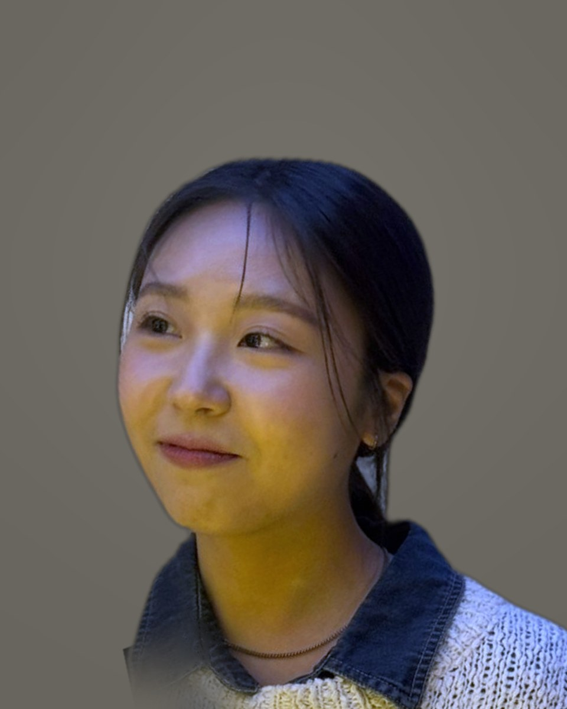

WORSHIP LEADER
김지성예배인도자
예배에 대한 마음가짐오늘 드리는 예배가 마지막 예배라는 마음으로, 매 순간 온 마음과 정성을 다해 하나님께 합당한 예배를 드리는 예배자가 되길 소망합니다.
신앙철학“이 백성은 내가 나를 위하여 지었나니 나를 찬송하게 하려 함이니라” (사 43:21)이 말씀을 따라 삶의 모든 순간에 하나님을 찬양하고 영광을 돌리며, 나의 삶을 통해 하나님의 사랑과 복음을 전하는 삶을 살아가길 소망합니다.
그레이스워십은 대전 유성구 은혜교회의 예배팀입니다. 매주 주일 예배를 섬기는 것이 우리의 본질이고, 그 은혜가 흘러가는 곳이라면 찬양집회와 창작곡, 지역 교회와 함께하는 연합예배까지 노래로 함께합니다.
우리가 드리는 찬양이 완벽한 공연이 아니라, 한 사람 한 사람의 삶에서 우러나온 고백이 되기를 바랍니다. 그래서 연습보다 먼저 말씀 앞에 서고, 무대보다 먼저 서로를 돌봅니다.
여러 목소리, 하나의 노래. 각자의 자리에서 예배를 섬깁니다.
예배에 대한 마음가짐오늘 드리는 예배가 마지막 예배라는 마음으로, 매 순간 온 마음과 정성을 다해 하나님께 합당한 예배를 드리는 예배자가 되길 소망합니다.
신앙철학“이 백성은 내가 나를 위하여 지었나니 나를 찬송하게 하려 함이니라” (사 43:21)이 말씀을 따라 삶의 모든 순간에 하나님을 찬양하고 영광을 돌리며, 나의 삶을 통해 하나님의 사랑과 복음을 전하는 삶을 살아가길 소망합니다.

예배에 대한 마음가짐제가 할 수 있는 가장 최선의 찬양을 최고의 하나님께 올려드리고 싶습니다.
신앙철학하나님께 받은 사랑을 삶으로 흘려보내며, 나의 말과 행동을 통해 한 사람이라도 더 하나님의 사랑을 알아가고 경험할 수 있기를 소망합니다.

예배철학내가 마땅히 할 수 있는 일이어서가 아니라, 하나님이 감당하게 하시고 나를 사용하시려고 이 일을 맡기셨다는 사명감을 가지고 예배하려 노력합니다. 누가 나를 부르셨는지, 왜 부르셨는지를 항상 기억하며 살아가고 싶습니다.
신앙철학원하는 것을 구하고 내 삶을 맡기기 이전에, 오로지 하나님을 경외하며 이미 주신 것에 감사하는 마음으로 살아가기를 원합니다.

예배철학나를 드러내기 위해서가 아니라 오직 우리 주 하나님만을 높이며 찬양하길 원합니다.
신앙철학일상 속에서 하나님이 주신 것에 감사하고, 하나님의 자녀 된 자로서 타인을 섬기는 것에 대해 늘 생각하고 실천하며 살고자 합니다.

예배에 대한 마음가짐내가 드러나는 것이 아니라, 우리 찬양팀이 돋보이는 것이 아니라, 오직 주님 한 분만 영광 받는 시간이 되길 소망합니다.
신앙철학나 같은 죄인 살리신 주님의 은혜에 감사하며 살아가자.

예배에 대한 마음가짐저로 인해서 성도님들이 더욱 큰 은혜를 느낄 수 있도록 찬양드리고 싶습니다.
신앙철학하나님과 교회 공동체 안에서 서로 교류하며 더욱 성장하여, 하나님의 뜻을 알고 그 뜻에 순종하고 행할 수 있는 사람이 될 수 있길 소망합니다.

예배에 대한 마음가짐화면에 띄우는 가사 한 줄도 예배의 일부라는 마음으로, 성도님들이 막힘없이 찬양에 집중할 수 있도록 보이지 않는 자리에서 섬기겠습니다.
신앙철학드러나지 않는 자리에서도 하나님은 다 보고 계신다는 믿음으로, 작은 일에 충성하며 맡겨진 일을 기쁨으로 감당하는 삶을 살기 원합니다.

예배에 대한 마음가짐보이지 않는 소리의 자리에서, 찬양 한 소절과 말씀 한 마디가 성도님들의 마음에 온전히 닿도록 섬기겠습니다.
신앙철학은혜로 부르셨으니 은혜로 섬깁니다. 개척의 자리에서부터 지금까지 함께하신 하나님의 은혜를 기억하며, 한 영혼을 끝까지 사랑하는 사람으로 살기 원합니다.
매주 주일 예배의 찬양을 섬깁니다. 그날의 말씀과 이어지는 곡을 고르고, 성도들이 함께 부를 수 있는 예배를 준비합니다.
찬양과 기도로만 채우는 밤을 엽니다. 교회 문을 열어 이웃과 다른 교회 성도들도 함께 초대합니다.
말씀을 묵상하며 우리의 언어로 새 노래를 짓습니다. 만든 곡은 음원과 악보로 나누어 다른 교회의 예배에도 쓰이도록 합니다.
예배의 의미부터 악기와 보컬, 팀워크까지. 청년과 청소년이 다음 세대의 예배자로 자라도록 함께 배우고 연습합니다.
지역 교회와 함께 드리는 연합예배, 수련회와 행사의 찬양으로 섬깁니다.